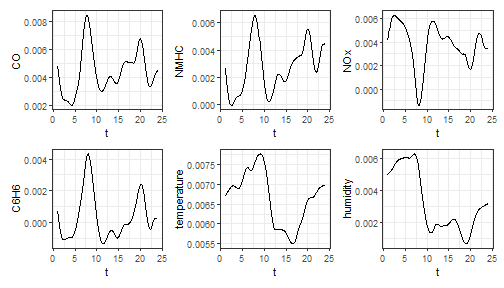
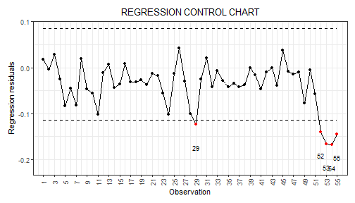

Control charts for monitoring a scalar quality characteristic adjusted for by the effect of functional covariates
In this vignette we show how to use the funcharts
package to apply the methods proposed in Capezza et al. (2020) to build
control charts for monitoring scalar quality characteristic adjusted for
by the effect of functional covariates, based on scalar-on-function
regression. Let us show how the funcharts package works
through an example with the dataset air, which has been
included from the R package FRegSigCom and is used in the
paper of Qi and Luo (2019). The authors propose a function-on-function
regression model of the NO2 functional variable on all the
other functional variables available in the dataset. In order to show
how the package works, we consider a scalar-on-function regression
model, where we take the mean of NO2 at each observation as
the scalar response and all other functions as functional
covariates.
First of all, starting from the discrete data, let us build the
multivariate functional data objects of class mfd, see
vignette("mfd").
library(funcharts)
data("air")
fun_covariates <- names(air)[names(air) != "NO2"]
mfdobj_x <- get_mfd_list(air[fun_covariates], grid = 1:24)Then, we extract the scalar response variable, i.e. the mean of
NO2 at each observation:
y <- rowMeans(air$NO2)In order to perform the statistical process monitoring analysis, we divide the data set into a phase I and a phase II dataset.
rows1 <- 1:300
rows2 <- 301:355
mfdobj_x1 <- mfdobj_x[rows1]
mfdobj_x2 <- mfdobj_x[rows2]
y1 <- y[rows1]
y2 <- y[rows2]Scalar-on-function regression
We can build a scalar-on-function linear regression model where the
response variable is a linear function of the multivariate functional
principal components scores. The principal components to retain in the
model can be selected with selection argument. Three
alternatives are available (default is variance):
- if “variance” (default), the first M multivariate functional
principal components are retained into the MFPCA model such that
together they explain a fraction of variance greater than
tot_variance_explained, - if “PRESS”, each j-th functional principal component is retained
into the MFPCA model if, by adding it to the set of the first j-1
functional principal components, then the predicted residual error sum
of squares (PRESS) statistic decreases, and at the same time the
fraction of variance explained by that single component is greater than
single_min_variance_explained.This criterion is used in Capezza et al. (2020). - if “gcv”, the criterion is equal as in the previous “PRESS” case, but the “PRESS” statistic is substituted by the generalized cross-validation (GCV) score.
Here, we use default values:
mod <- sof_pc(y = y1, mfdobj_x = mfdobj_x1)As a result you get a list with several arguments, among which the
original data used for model estimation, the result of applying
pca_mfd on the multivariate functional covariates, the
estimated regression model. It is possible to plot the estimated
functional regression coefficients, which is also a multivariate
functional data object of class mfd:
plot_mfd(mod$beta)
Moreover bootstrap can be used to obtain uncertainty quantification:
plot_bootstrap_sof_pc(mod, nboot = 10)
Control charts
We can build the regression control chart to monitor the scalar
response, as performed in Capezza et al. (2020). The function
regr_cc_sof provides a data frame with all the information
required to plot the desired control charts. Among the arguments, you
can pass the arguments y_tuning and
mfdobj_x_tuning set, that are not used for model
estimation/training, but only to estimate control chart limits. If these
arguments are not provided, control chart limits are calculated on the
basis of the training data. The arguments y_new and
mfdobj_x_new contain the phase II data set of observations
of the scalar response and the functional covariates to be monitored,
respectively. The function plot_control_charts returns the
plot of the control charts.
cclist <- regr_cc_sof(object = mod,
y_new = y2,
mfdobj_x_new = mfdobj_x2)
plot_control_charts(cclist)
References
- Capezza C, Lepore A, Menafoglio A, Palumbo B, Vantini S. (2020) Control charts for monitoring ship operating conditions and CO2 emissions based on scalar-on-function regression. Applied Stochastic Models in Business and Industry, 36(3):477–500. https://doi.org/10.1002/asmb.2507
- Qi X, Luo R. (2019). Nonlinear function-on-function additive model with multiple predictor curves. Statistica Sinica, 29:719–739. https://doi.org/10.5705/ss.202017.0249